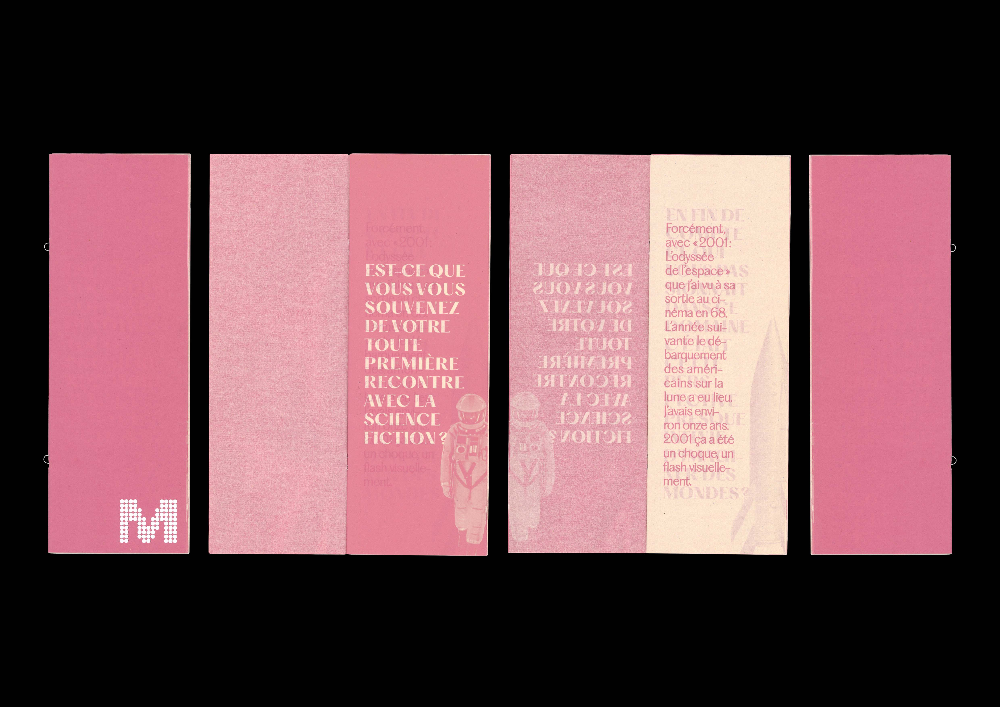
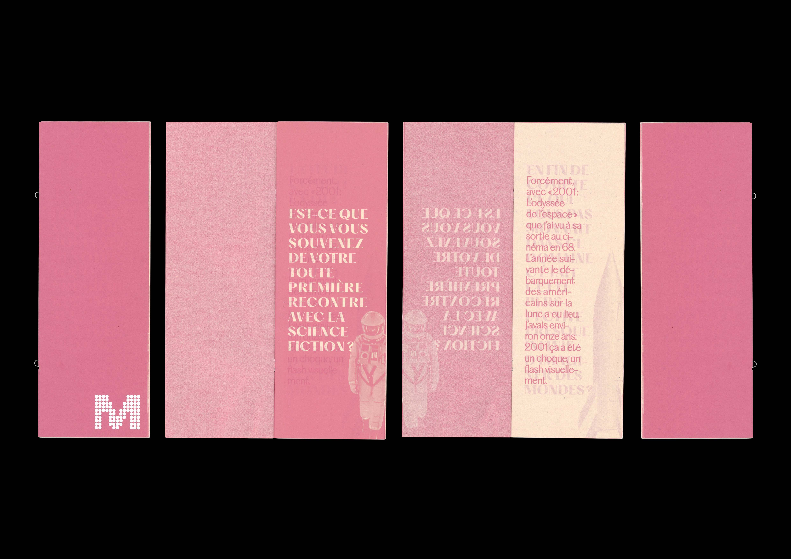

| Projet | Coffret d’artiste, Manchu |
| Année | 2025 |
| Support | Coffret, affiches, éditions, leporello, cartes, livrets typographiques |
| Dimensions | Multiples |
| Façonnage | Impression laser, création fait-main, risographie, sérigraphie |
| Conception graphique | Gabrielle Hermet |
Manchu est un artiste qui peint à l’acrylique des paysages spatiaux et de science-fiction. Il parvient à représenter ses visions futuristes avec précision et réalisme en s’appuyant sur des technologies spatiales. Il en a réalisé pour de nombreux livres, films d’animation et affiches. Ce coffret s’inspire de son travail afin de le mettre en valeur tout en y apportant ma propre touche artistique. Il est composé de cinq affiches, d’une édition principale consacrée à ses œuvres et à ses inspirations, d’une édition retranscrivant une interview, d’un leporello présentant des détails de ses peintures, d’une typographie créée à partir des mécaniques des vaisseaux qu’il représente, de cartes sur lesquelles j’ai redessiné quelques-uns de ses vaisseaux, ainsi que du coffret lui-même. Les nombreuses couleurs rappellent son univers, tandis que l’ensemble adopte une esthétique plus épurée afin de contraster avec son travail riche et saturé de détails.
 
